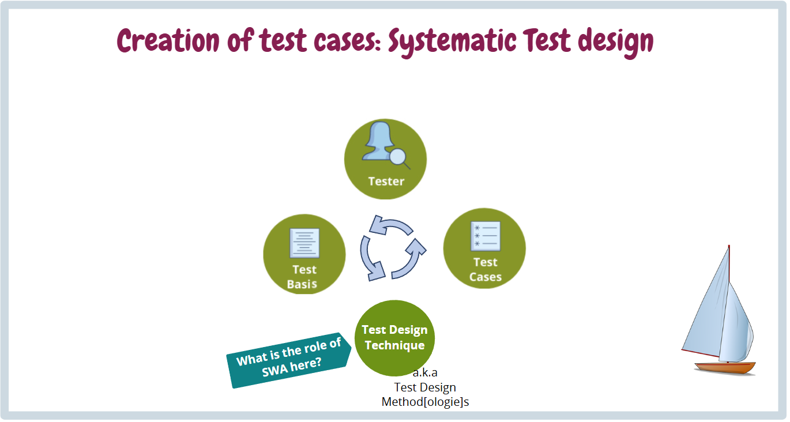
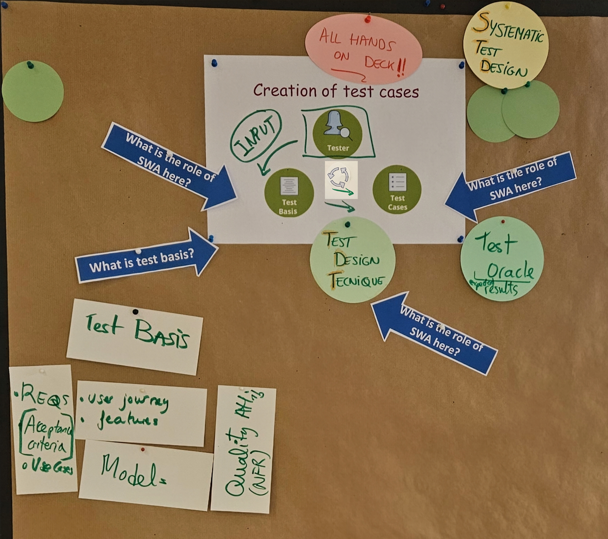

Systematic Test Design
Systematic Test Design (STD) is a structured process of transforming general testing objectives into specific test conditions and test cases (test cases). Moving away from an ad-hoc approach toward the systematic application of test design techniques (Test Design Techniques - TDT) enables demonstrable measurement of requirements or code coverage, effective defect detection, and optimization of testing effort. From a software architecture perspective, STD is crucial for design verification: if the architecture is properly designed (for example, using explicit state machines), systematic test design methods can be applied to it directly and algorithmically. Formalized test design proves to be almost twice as effective at detecting defects per test case compared with purely expert-based (exploratory) testing.
Systematic Test Design (STD) is a structured engineering approach to analyzing the test basis (test basis) and deriving test cases and sequences in order to achieve the required coverage of quality and risks. The main objective of STD is to replace ad-hoc testing with a reproducible methodology that minimizes redundant tests, maximizes the effectiveness of defect detection, and provides objective coverage metrics.
#

#Definitions and Basic Concepts
The following concepts form the fundamental vocabulary for discussing systematic test design.
Systematic Test Design (STD)
- Definition: A formalized process of identifying test conditions and transforming requirements, architecture, or code into specific test cases and test procedures using defined techniques.
- Significance in architecture: The architecture must provide a stable and unambiguous test basis (functional and structural models) from which tests can be derived systematically.
- Significance in testing: Ensures measurable coverage (coverage), test repeatability, and the elimination of blind spots in the test strategy.
- Typical mistake or misunderstanding: Mistaking STD for merely writing down test steps without using formal mathematical methods/coverage policies, or relying exclusively on intuitive ad-hoc testing.
Test Design (Test Design)
- Definition: The process of transforming general testing objectives into measurable test conditions (test conditions) and specifying concrete test cases.
- Significance in architecture: The architecture must be designed with testability in mind (Design for Testability) to make it possible to derive test cases systematically and apply them to component interfaces at all.
- Significance in testing: Provides a bridge between analysis (what we will test) and implementation (how we will test it).
- Typical mistake or misunderstanding: Confusing test design (creating scenarios) with execution (actually running them). Jumping to execution without systematic design leads to redundant tests and overlooked boundary conditions.
Test Basis (Test Basis)
- Definition: A body of knowledge or documentation (for example, requirements, architecture, specifications) that serves as the foundation for test analysis and design.
- Significance in architecture: Architectural models (UML, SysML, state machine diagrams) often serve as the main test basis for integration tests.
- Significance in testing: Without a valid test basis, a precise test oracle (expected result) cannot be designed.
- Typical mistake or misunderstanding: Using the source code itself as the sole test basis for functional tests, which merely verifies that the code does what it does and fails to reveal missing functionality.
Test Case (Test Case)
- Definition: A set of input values, execution preconditions (preconditions), expected results, and postconditions (postconditions), developed for a particular objective or test condition, such as verifying compliance with a specific requirement or exercising a particular path through the program.
- Significance in architecture: Serves as a verification mechanism for architectural boundaries and interface contracts (APIs, component communication protocols, state machines). In turn, this confirms that the decomposition and interaction of subsystems correspond to the architectural design.
- Significance in testing: Represents the smallest atomic unit of execution and traceability (traceability) covering the test basis. Enables precise specification of the oracle (pass/fail criteria) and reproducibility of results independently of the tester.
- Typical mistake or misunderstanding: Creating a so-called "Eager Test" (a test case verifies too many things at once in a single run), or omitting a precise expected result, so that the test relies on the vague assertion "the system works without errors" instead of strictly evaluating the output and state.
Test Effectiveness (Testing Effectiveness)
- Definition: A measure of a testing technique's ability to detect defects in software.
- Significance in architecture: The choice of architectural patterns affects how effectively defects can be isolated and diagnosed.
- Significance in testing: Evaluates how many defects the test design has detected relative to the effort expended. Systematic design is demonstrably more effective than testing according to a "checklist".
- Typical mistake or misunderstanding: Pursuing the quantity of test cases (test cases) instead of tracking their ability to find actual defects.
Specification-based techniques (Black-box TDTs)
- Definition: Test derivation methods based on analysis of the specification without knowledge of the internal structure (for example, Equivalence Partitioning, Boundary Value Analysis, State-based testing).
- Significance in architecture: Focus on verifying the contracts and interfaces (APIs) defined by the architect.
- Significance in testing: Are the primary tool for verifying requirements (Requirements-based testing) and user scenarios.
- Typical mistake or misunderstanding: Assuming that covering all specified functionality implies zero risk of a crash (the system may fail on an undefined input that the black-box test did not cover).
Structure-based techniques (White-box TDTs)
- Definition: Test derivation methods based on analysis of a component's internal structure (for example, Control flow testing, Statement coverage, Decision/Branch coverage).
- Significance in architecture: Serve to validate the internal control flow and data processing specified in the detailed design.
- Significance in testing: Ensure structural code coverage, which is often mandated by legislation (for example, automotive ISO 26262 or aviation DO-178C).
- Typical mistake or misunderstanding: Relying on 100% statement coverage as a guarantee of freedom from defects. 100% statement coverage does not guarantee 100% decision coverage or the correctness of business logic.
Requirements Traceability Matrix (SRTM / Traceability Matrix)
- Definition: A tool or artifact mapping the relationships between requirements, top-level architectural design, test cases, and test results.
- Significance in architecture: Demonstrates the completeness of the architecture with respect to requirements and supports change impact analysis (impact analysis).
- Significance in testing: Ensures verification of 100% requirements coverage by tests and enables straightforward reporting for certification audits (ASPICE, ISO 26262).
- Typical mistake or misunderstanding: Viewing the SRTM as a static document created only at the end of a project instead of a living tool within the development cycle.
#Common Mistakes and Anti-Patterns
A number of failures can be identified in the context of systematic test design, across the development phases:
- Mistakes in architecture and testability:
- Poor observability and controllability: If the architect does not make it possible to inject states (for example, introducing fault signals) and read a component's internal states, systematic techniques (such as State-based testing) cannot be applied because the tester cannot bring the system into the required state.
- Mistakes in test strategy:
- Losing breadth because of excessive depth (Losing breadth because of too much depth): Applying a single testing method (for example, only boundary values) to an absurd degree of perfection while ignoring other types (for example, scenario or load testing).
- Ignoring exploratory testing: Systematic TDT must not replace exploratory testing. Systematic tests verify what we have anticipated; exploratory testing is necessary to reveal unanticipated risks.
- Mistakes in requirements (Test Basis):
- Using untestable requirements: If the specification contains vague expressions (for example, "the system must respond quickly"), equivalence classes or a test oracle cannot be derived mathematically from it.
- Mistakes in automation:
- Converting poorly designed tests into automated tests: Automating ad-hoc tests without systematic design merely results in poor-quality tests running faster, creating a so-called maintenance nightmare (maintenance nightmare).
- Siloed separation of architect and tester roles (Communication Anti-pattern)
- Problem: The architect designs the system without consulting the test manager / test architect, and the testing team does not create tests until the code is complete.
- Manifestation: Late discovery of architectural defects (high correction costs) and an inability to use advanced STD techniques in time.
- Remedy: Establishing close collaboration between the software architect and the test architect from the initial phases of the project (Joint Venture).
#Examination Questions
The questions are designed to assess a deep understanding of TDTs and their relationship to architecture and risks.
Basic questions:
- Question: What is the difference between black-box and white-box testing methods, and what are their inputs?
- Expected answer: Black-box is based on specifications and requirements (without knowledge of the internal structure). White-box is based on source code and detailed design.
Intermediate questions:
- Question: Name at least three systematic techniques for specification-based test design, and state what type of problem you would use each one for.
- Expected answer: Equivalence partitioning (minimizing the number of inputs for domain constraints), Boundary Value Analysis (finding off-by-one errors at interval boundaries), State-based testing (verifying transition logic in state machines).
Advanced questions:
- Question: According to ISTQB definitions and safety standards (ISO 26262), what does 100% Statement Coverage guarantee, and what does it lack?
- Expected answer: It guarantees that every statement has been executed at least once. However, it does not guarantee 100% Branch/Decision coverage (for example, if an
elsebranch is missing, statement coverage is satisfied even though the logical defect remains hidden), and certainly does not guarantee Condition coverage.
- Expected answer: It guarantees that every statement has been executed at least once. However, it does not guarantee 100% Branch/Decision coverage (for example, if an
Questions about practical experience:
- Question: While testing a vehicle's embedded system, you encounter a function that combines inputs from 4 independent sensors. Which systematic method would you choose to test their combinations effectively without having to test every conceivable state?
- Expected answer: Using combinatorial techniques, typically Pairwise testing (Orthogonal arrays), which reduce the number of tests while preserving coverage of all pairs of discrete inputs.
Questions about trade-off decisions:
- Question: Your project is behind schedule. As a Test Architect, how would you decide to reduce the volume of tests (Test Effort Allocation) using Risk-based testing and TDTs?
- Expected answer: I would reduce tests on less critical components to the level of Boundary Values or Opportunity testing. For critical (Mission-critical) components, I would retain rigorous techniques (for example, Multiple Condition Coverage) and full backward traceability. The decision depends on the combination of the probability of a defect occurring and its impact.
#Model Examination Answer
The following text is designed as a continuous spoken presentation (approximately 4–5 minutes).
"Systematic Test Design, that is, systematic test design, is a key engineering process. Its essence is the transformation of abstract testing objectives – often high-level requirements or architectural risks – into entirely tangible and repeatable test conditions and specific test cases.
For me as an architect, this topic has two fundamental connections. The first is the 'Test Basis', or test basis. An abstract design is useless if the architectural models, state diagrams, or API specifications do not provide a sufficient basis for the tester to derive an unambiguous oracle – the expected result. The second connection is the testability of the architecture itself. We may know perfect test design techniques, but if the architecture lacks observability and controllability, these techniques cannot be applied.
From a testing perspective, a systematic approach gives us a tool for 'Test Effectiveness' – testing effectiveness. Data, for example from Peter Zimmerer at Siemens, show that formal test design can detect almost twice as many defects per test case compared with a purely expert-based approach relying on estimates or checklists.
What does this look like in practice? Let us imagine cruise control software (Cruise Control). Instead of trying inputs at random, I use Equivalence Partitioning and Boundary Value Analysis to test the input speed – I test speeds within the valid interval, right at the activation boundary, and invalid speeds. I then take the state machine from the architectural design and apply State-based testing (a Black-box technique) to verify that the system safely ignores acceleration commands when it is in the 'Braking' state. Finally, because this is a safety-critical component, I apply Structure-based techniques (White-box) to mathematically demonstrate 100% Branch Coverage (decision coverage).
However, we must not forget trade-offs. Systematic techniques (TDTs) have high preparation costs. 'Test design methods' verify that the system does what is required of it in the specification, but they are less effective at revealing risks that no one has thought of (so-called unknown unknowns). This gives rise to a typical anti-pattern: trying to replace all exploratory testing with formal design, which leads to blindness to unanticipated behavior.
In conclusion, I can summarize as follows: A good test strategy does not use just one method. The selection, intensity, and combination of systematic TDTs, such as flow-based, state-based, or boundary analyses, must be guided by risks (Risk-Based Testing) and must be closely aligned with the maturity of the software architecture."
#11. Short Version for Quick Revision
5 main points:
- STD transforms testing from random "clicking around" into an engineering discipline governed by algorithms.
- A properly designed test (TDT) catches more defects earlier and at lower cost.
- STD requires a testable architecture (observability, controllability, statefulness).
- Black-box (Specification-based) and White-box (Structure-based) techniques must be combined.
- The choice of depth and breadth of test design techniques must be guided by risk analysis (Risk-based testing).
5 key concepts:
- Test Basis (Test Basis) – Sources from which we design tests (requirements, architecture).
- Test Oracle (Oracle) – The source for determining the expected test result (it must never be the code under test itself).
- Equivalence Partitioning – Dividing inputs into equivalence classes in order to reduce the number of tests.
- Boundary Value Analysis – Testing values at the edges of equivalence classes (where most off-by-one errors occur).
- State-based testing – Designing tests based on the state transitions defined in the design (FSM).
5 typical examination questions:
- What is a test basis, and what must not be used as a test oracle for functional tests?
- What is the difference between Statement Coverage and Decision Coverage?
- How would you test a system with an enormous number of input combinations? (Answer: Combinatorial/Pair-wise testing)
- What is the purpose of the Error Guessing technique, and where does it fit in the classification?
- Why can systematic Test Design not completely replace Exploratory Testing?
3 most common mistakes:
- Focusing only on structural coverage (code) and ignoring the specification.
- The architecture's inability to provide the inputs/outputs necessary for an automated systematic test (low testability).
- "Losing breadth because of too much depth" – fixation on a single design method.
Model examination sentence: "Systematic test design transforms the specification and architectural design into measurable test cases; however, achieving maximum effectiveness and coverage requires combining black-box and white-box techniques based on an assessment of project risks."
#Learning outcome
This answer fulfills the objectives defined in LOPO in the "Systematic Test Design" section:
- Importance of STD: It has been explained in detail that STD helps structure testing, make it objective, and increase Test Effectiveness (the ability to detect defects).
- Examples of TDTs: The application of techniques such as state-based testing, control flow-based, equivalence classes, and boundary values has been demonstrated in model scenarios, and their underlying principles have been explained.
- Inputs and Benefits: We have emphasized that the main input is the Test Basis (architecture, specification, risks), and the benefits are maximizing Test Effectiveness and ensuring traceability and reproducibility.
#Summary in a Single Table
| Area | What is important | Relationship to architecture | Relationship to testing | Typical examination question |
|---|---|---|---|---|
| Black-box (Spec-based) | Creating tests without knowledge of the code (Equivalence, Boundaries, State-based). | Verifying application interfaces, contracts, and the overall system design (GDD). | Ensures functional coverage against the specification and reveals omitted business logic. | How would you test cruise control speed limits using Boundary Value Analysis? |
| White-box (Structure-based) | Based directly on the code structure (Statement, Branch, Path coverage). | Affected by code complexity (cyclomatic complexity). Dictates the level of unit isolation. | Primarily serves to detect dead code and structural failures at the Unit test level. | Explain why 100% Statement Coverage does not guarantee 100% Decision Coverage. |
| Test Effectiveness | Emphasis on the ability to find defects, not merely to produce large numbers of tests. | Reflects the quality of "Design for Testability". An architecture that is difficult to test sharply reduces effectiveness. | An argument for introducing formal test design (it is more effective than ad-hoc/error guessing). | Why is systematic test design (STD) more effective than the checklist method? |
| Test Basis & Oracle | Design inputs (requirements, models) and an independent source for the expected result. | The architecture must be described formally; otherwise, correct behavior cannot be defined precisely. | If there is no oracle, the test cannot determine a Pass/Fail status. | What is a test oracle, and why can it not be the code under test? |
| Choice of strategies and TDT | There is no single ideal method. They must be combined based on RBT (Risk-Based Testing). | Critical architectural modules require more rigorous test design. | Ensures cost optimization ("not performing unnecessary tests" and "not omitting key tests"). | How would you allocate testing effort between a critical and a non-critical part of the system? |
#Difference between Systematic Test Design and Test Design Tactics
- Systematic Test Design (STD) is a process and methodological framework on the verification side. It addresses the question: "WHAT test data and sequences must we generate from the specification or code to systematically cover functional and structural requirements?"
- Test Design Tactics represent architectural and design decisions/patterns on the side of the system under test (SUT) and the test environment. They address the question: "HOW must we construct the software and its interfaces (stubs, mocks, hooks, BIST) so that the systematic tests described above can be injected, executed, and evaluated at all?"
#Scope of Activities (Scope of Activities)
Scope of Activities in Systematic Test Design (STD):
- Test basis analysis: Reviewing requirements (SRS), architecture (SDD), and code to identify test conditions.
- Application of test design methods: Deriving test cases using ECP, BVA, decision tables, state transitions (black-box), or C0/C1/MC-DC (white-box).
- Design for testability (Design for Testability): Principles such as reducing dependencies through layered architecture and component orientation are incorporated into the system design, making integration testing easier.
- Definition of expected results (Test Oracles): Establishing success/failure criteria for each test case.
- Traceability and coverage: Creating and updating the traceability matrix (SRTM) and evaluating the degree of coverage.
Scope of Activities in Test Design Tactics:
- Increasing observability (Observability): Implementing diagnostic interfaces, logging, tracing, and internal inspection points.
- Increasing controllability (Controllability): Architectural separation of dependencies (Dependency Injection) to allow the insertion of simulators, stubs, and mock objects.
- Preparing interfaces for fault injection (Fault Injection Hooks): Designing mechanisms to simulate hardware failures, memory corruption, or time delays.
- Creating built-in tests (Built-In Self-Test – BIST): Implementing automatic integrity checks at component startup or during operation.
#Summary Table for the Software Architect
| Criterion | Systematic Test Design (Strategy) | Test Design Tactics (Techniques) |
|---|---|---|
| Level of abstraction | Strategic level, guiding principles, and overall ideas. | Logistical, tactical, and detailed level. |
| Main objective | Answer the question of "how" we will test and reduce the overall testing effort. | Apply procedures to solve specific testing tasks. |
| Architect's role | Specifying the architecture (models, interfaces), ensuring testability, and choosing the overall approach. | Understanding and overseeing tactics for verifying specific architectural quality attributes. |
| Typical outputs | Test strategy, test system architecture, traceability matrix. | Specific test cases (test cases), sets of input values, and expected results. |
For a software architect, it is crucial to understand that without a defined systematic framework and good software testability, even the best tactics at the individual test level will encounter the limits of the overall architecture.
